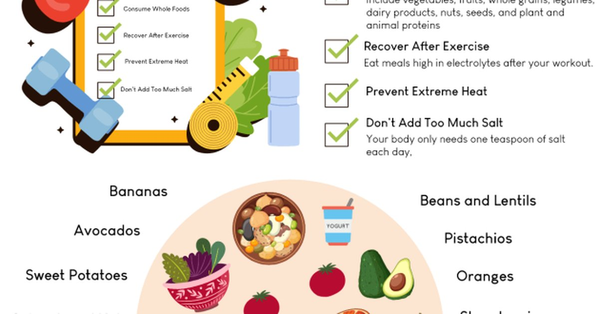

I had a client once who was doing everything right. She drank three liters of water a day. She exercised five times a week. She ate vegetables with every meal. And she felt terrible. Constant headaches, muscle twitches, fatigue that wouldn’t quit. Her doctor ran all the tests. Everything came back normal. She came to me because she was desperate. I asked her about salt. She said, “I don’t add salt to anything. My doctor told me to watch my sodium for my blood pressure.” Her blood pressure was fine. Her sodium intake was not. She was drinking all that water, sweating during exercise, and replacing zero electrolytes. She was literally washing the sodium out of her system. We did a simple test. I asked her to add a pinch of salt to her breakfast and another pinch to her lunch. Within three days, her headaches were gone. Within a week, the muscle twitches stopped. She said she felt like a new person. She wasn’t sick. She was electrolyte deficient. Sodium is the most talked‑about electrolyte, but it’s not the only one. Potassium and magnesium matter just as much. And the balance between them is critical. Too much sodium without enough potassium can raise blood pressure. Too little magnesium can cause cramps, anxiety, and poor sleep. Most people focus on water volume and forget the minerals that make that water useful. Let me break down each one. Sodium is the boss of fluid balance. It’s the primary electrolyte in your blood and the fluid outside your cells. When sodium levels drop, water moves into your cells, making them swell. That’s hyponatremia. Symptoms include headache, nausea, confusion, and in severe cases, seizures. When sodium levels are too high, water moves out of your cells, and you get thirsty and dry‑mouthed. That’s hypernatremia. The average person needs about 1,500 to 2,300 milligrams of sodium per day. That’s less than one teaspoon of table salt. Most Americans eat way more than that because processed food is loaded with salt. But athletes, people in hot climates, and salty sweaters need more. Some endurance athletes need 3,000 to 5,000 mg per day to replace sweat losses. My client wasn’t eating processed food. She was cooking from scratch, no added salt, lots of water. Her diet was too low in sodium. That’s rare, but it happens. The fix was easy. Pinch of salt. Potassium is the main electrolyte inside your cells. It works opposite to sodium. Sodium pulls water into your blood vessels. Potassium helps your muscles contract and your nerves fire. Low potassium causes weakness, fatigue, muscle cramps, and irregular heartbeats. High potassium is rare in healthy people but can be dangerous. The recommended daily intake for potassium is about 2,600 to 3,400 milligrams. That’s a lot. One banana has only 400 mg. A potato has 900 mg. Avocado has 700 mg. Spinach has 800 mg per cooked cup. Most people don’t get enough potassium because they don’t eat enough fruits and vegetables. I have a client named Carlos who had terrible muscle cramps during his soccer games. He drank sports drinks and ate bananas. Still cramped. We looked at his diet. He was getting about 2,000 mg of potassium per day. We added a baked potato with dinner and a spinach smoothie in the morning. His potassium jumped to 3,500 mg. The cramps stopped. The ratio of sodium to potassium matters. A high sodium to potassium ratio is linked to high blood pressure and heart disease. The ideal ratio is about 1:1 to 1:2. Most Americans eat a ratio of 2:1 or higher because their diet is high in processed food (sodium) and low in fruits and vegetables (potassium). Fixing that ratio is one of the best things you can do for your heart. Magnesium is the relaxation mineral. It helps your muscles relax after contraction, your nerves calm down, and your heart beat steadily. Low magnesium causes muscle twitches, cramps, anxiety, insomnia, and even migraines. It’s also involved in over 300 enzymatic reactions in your body. The recommended intake is 300 to 400 milligrams per day for adults. Good sources are nuts, seeds, dark leafy greens, beans, and whole grains. One ounce of almonds has 80 mg. A cup of cooked spinach has 160 mg. A cup of black beans has 120 mg. Carlos, the soccer player, was also low on magnesium. His diet had almost no nuts or seeds. We added a handful of almonds to his snack and a magnesium supplement at night. His sleep improved, and his post‑game muscle soreness decreased. Magnesium is also lost through sweat. Sweat magnesium concentration is about 10‑20 mg per liter. For a heavy sweater losing 2 liters per hour, that’s 20‑40 mg of magnesium lost per hour. Not huge, but over a long race, it adds up. Some athletes take magnesium supplements to prevent cramps, but the evidence is mixed. Food sources are usually enough. The interaction between these three electrolytes is complex. Sodium and potassium work as a pair, pumping in and out of cells. Magnesium helps regulate that pump. If any one is low, the others can’t do their jobs. So what does this mean for hydration? Plain water is the baseline, but if you’re sweating a lot or eating a very clean diet, you might need to add electrolytes. Not just sodium. All three. I use a simple framework with my clients. For everyday hydration in a temperate climate, food provides enough electrolytes. Eat a banana, some nuts, and a salty meal, and you’re fine. For exercise longer than an hour, or in hot weather, add a sports drink or electrolyte tablet. For heavy sweaters or people on low‑carb diets, you may need even more. One red flag is muscle cramps at night. That’s often low magnesium or low potassium. Try adding a banana before bed or a magnesium glycinate supplement. Another red flag is morning headaches. That can be low sodium or dehydration. Try adding a pinch of salt to your morning water. I had a client who had horrible leg cramps at 3 AM. She was drinking plenty of water, eating a balanced diet, and doing yoga. Her magnesium intake was about 200 mg per day. We added a magnesium spray on her calves before bed and a magnesium capsule at dinner. The cramps stopped within three days. She said it changed her life. Another client had chronic low energy and brain fog. He was drinking 3 liters of water a day but no electrolytes. His sodium was low. We added 500 mg of sodium to his morning bottle. He said his fog lifted within an hour. That’s how fast electrolytes work. The supplement market is full of electrolyte products, and most of them are overpriced. You don’t need fancy powders. A pinch of salt in your water, a banana, and a handful of almonds cover most people’s needs. For athletes, a basic sports drink or salt tablet is fine. Don’t pay $40 for a tub of “electrolyte nectar.” I built a tool that helps people check their electrolyte balance based on diet and sweat loss.Exercise Sweat Loss Estimator
Estimates sodium loss per hour. Also gives general guidance on potassium and magnesium based on sweat volume.
All data stays in your browser — we never see it.
Daily Water Intake Calculator
Gives you a fluid goal and suggests when to add electrolytes based on climate and activity.
All data stays in your browser — we never see it.
Beverage Hydration Index Tool
Filters by sodium, potassium, and magnesium content. Find the best drink for your needs.
All data stays in your browser — we never see it.